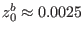
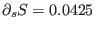
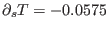

Next: Gotland Deep Up: Shelf sea scenarios Previous: Seasonal North Sea simulation Contents
The observations for this scenario have been carried out by Rippeth et al. (2001) in the Liverpool Bay ROFI on July 5 and 6, 1999 at a position of 5328.4'N, 339.2'W. This period is about three days after spring tide, with calm weather and clear sky. The dissipation rate measurements were carried out with a FLY shear probe mounted on a free-falling profiler. Sensors for temperature and conductivity attached to the profiler give detailed information on the vertical density distribution during each cast. Nearby, an ADCP was mounted on the bottom, giving information on the vertical velocity structure. Some accompanying CTD casts were made in order to achieve estimates for the horizontal gradients of temperature and salinity. For further details concerning the observations, see Rippeth et al. (2001).
The surface fluxes are based on ship observations and from a
nearby meteorological station at Hawarden. From the ship,
wind speed and direction at 10 m above the sea surface and
air pressure have been taken. From Hawarden station, observations of
dry air,
wet bulb and dew point temperature are used. Since the
surface fluxes
are calculated externally by means of
bulk
formulae of Kondo (1975), the sea surface temperature
from measurements (FLY profiler)
has been used.
The bed roughness has been estimated from near-bed ADCP measurements
as
 m
by means of fits to the law of the wall.
The external pressure gradient due to surface slopes is
estimated according to a method suggested by Burchard (1999)
by means of adjustment to near bed velocity observations.
The CTD casts carried out during the campaign did only allow for rough
estimates of the horizontal density gradient.
The
horizontal salinity and temperature gradients for a typical summer situation
have been estimated
by Sharples (1992) to
 pptkm and
 Kkm, respectively. Here,  is the
gradient into the direction
is the
gradient into the direction
 rotated
anti-clockwise from North.
rotated
anti-clockwise from North.
Data files:
| sprof.dat | salinity in ppt from free-falling shear-probe |
| tprof.dat | potential temperature in from free-falling shear-probe |
| pressure.dat | near-bed velocity from ADCP for external pressure forcing |
| zeta.dat | sea surface elevation from pressure gauge |
| velprof.dat | horizontal velocities from bottom mounted ADCP |
| eprof.dat | observed dissipation rates in Wkg |
| heatflux.dat | surface heat fluxes calculated accroding to Kondo (1975) |
| momentumflux.dat | surface momentum fluxes calculated according to Kondo (1975) |
The numerical simulations of this scenario has been described in Simpson et al. (2002).
Karsten Bolding 2012-01-24